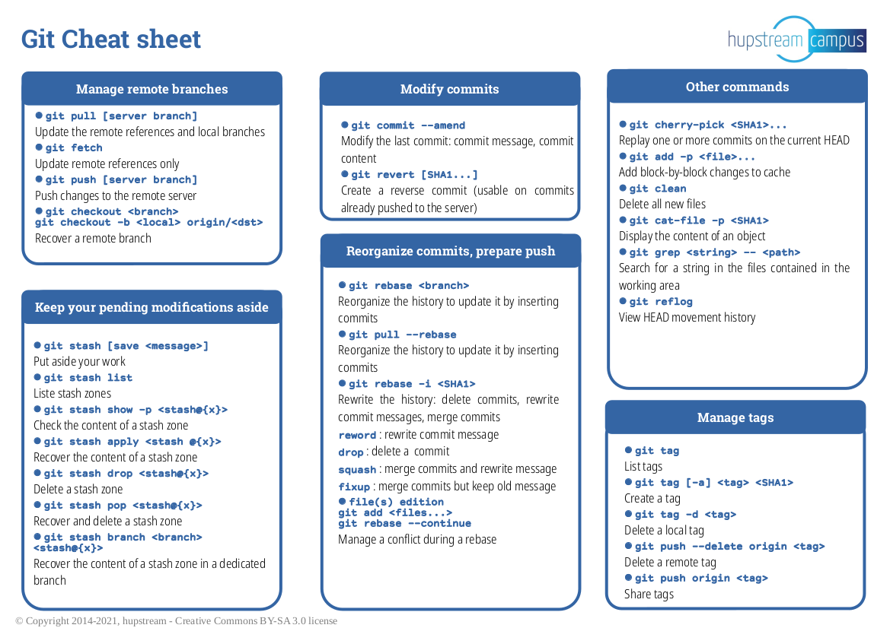
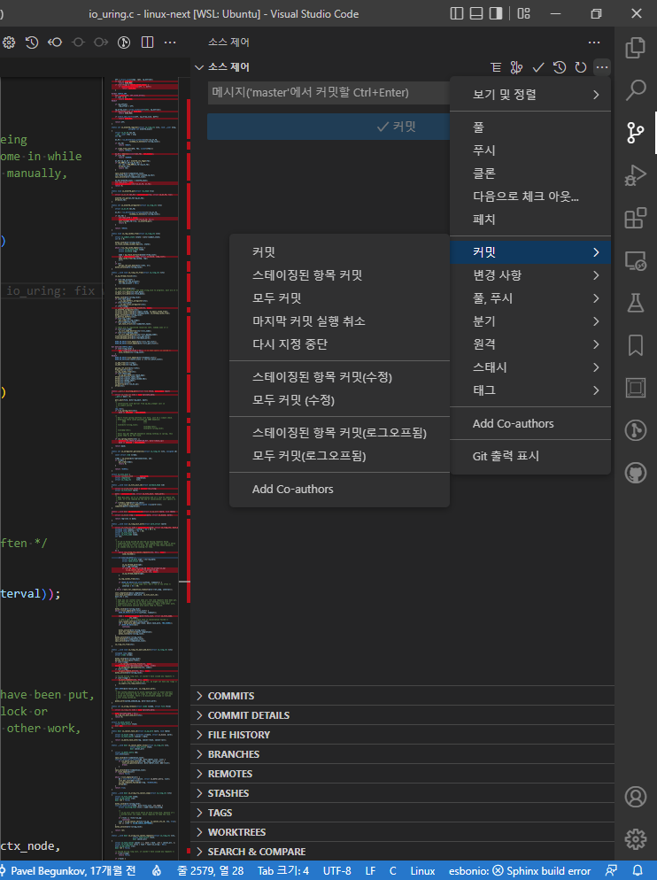

📽️
VS Code 너가 있어 편리한 Git, 덤으로 보는 오픈소스 기여 🤗
10분 안에 살펴보는 VS Code → Github or Mailing 기반 오픈소스 기여하기
인지기술팀 김윤성
VS Code 를 활용한 Git
- 마이크로소프트 윈도우, macOS, 리눅스용으로 electron(node.js) 기반 편집기입니다.
- Plugin 을 추가하여 풍부한 기능을 가진 IDE 로 사용할 수 있습니다.
- VS Code 자체적으로 지원하는 Git 기능이 참 편리합니다.
- 철권처럼 커맨드를 조합하여 사용하는 기능을 버튼 하나로 함축했습니다.
- 추가적으로 Git 기능 외에도 SSH 또는 Live Share 원격 개발 환경 및 멀티 유저 편집이 가능합니다.
Git Command
VS Code 를 활용한 Git
Git History
- History 그래프를 볼 때 유용한 Git History 플러그인
- 커밋 히스토리를 보기 위한
git log, 특정 커밋의 시점으로 바꾸는git checkout에 대응하는 기능인데 직관적으로 보기 편합니다.

Git Lens
- 코드 라인 & 파일 별 히스토리 추적에 용이한 Git Lens 플러그인

CONTRIBUTING
- 오픈소스 프로젝트
- Github, Gitlab, cgit 등의 git 기반 호스팅에 레포지토리들
- 각 프로젝트에 Core, Util, Docs, unit-test, run-test, CI/CD 등에 기여합니다.
-
- 게시판 형태의 플랫폼은 issue 를 확인
-
- 메일링 기반은 메일링 등록
-
- wiki 또는 소스 최상단 컨트리뷰션 가이드 문서 예시입니다.
Contribution - Review
국제적으로 메일링 기록이 남기 때문에,
메인테이너들이 사소한 패치라도 신중하게 리뷰해줍니다.
특히, Pull Request(패치)를 보낸 기여자를 설득하기 위해서
어려운 동작을 자세히 설명해주어 많은 도움이 되었습니다.
Github Uftrace - Commit
코드 정적 분석기로 나온 항목 중에 Null 관련 보안 사항을 확인한 후 패치를 해봅니다.
cmds/graph.c:282: error: Null Dereference
pointer `graph` last assigned on line 279 could be null
and is dereferenced at line 282, column 3.
281. if (tg->utg.graph && tg->utg.graph != graph) {
282. pr_dbg("detect new session: %.*s\n", SESSION_ID_LEN, graph->sess->sid);
^
깃허브 이슈로 등록한 뒤에 해당 사항을 보완하는 작업을 진행합니다.

Before PR
커밋을 하고 난 뒤에 마지막 커밋 실행 취소로 쉽게 스테이징 단계로 되돌아 올 수 있습니다.
코드리뷰를 받고 보완할 부분이 있다면, 활용하면 좋습니다.

Before PR
커밋하고 푸쉬로 origin 브랜치에 반영되었는데 또 수정이 필요하다면?
커밋을 다시할 필요 없이 마지막 커밋을 git push -f 로 덮어 써줍니다.
PR
fork 한 브랜치(Downstream)를 origin(Upstream)에 머지할 수 있도록 PR 을 작성하는 단계입니다.

Linux Kernel - Send Patch
소스 최상단의 MAINTAINERS 참고하여 github 와 1 ~ 2 와 유사하지만, PR 과 코드 리뷰를 모두 담당자의 메일로 보냅니다.
git send-email --smtp-pass="비밀번호" \
--to="메인테이너@이메일.주소" \
--cc="참조할@메일.주소들" \
--confirm=always -M -1
뒤에 카운트는 작업한 커밋 개수를 넣습니다.
git send-email \
--to="Thomas Gleixner <tglx@linutronix.de>, Marc Zyngier <maz@kernel.org>"
--cc="linux-kernel@vger.kernel.org, Austin Kim <austindh.kim@gmail.com>"
--confirm=always -M -1
Send Patch(Cont’d)
커밋 메세지를 작성할 때, 영어 작문 실력이 필요하지만,
우리에겐 구글 번역기가 있습니다.
Hello
Since we have a macro defined in our IRQ subsystem internal functions to
traverse the list of actions, how about refactoring this loop?
- genirq: Use a common macro to go through the actions list
(f944b5a7aff05a244a6c8cac297819af09a199e4)
have a good day!
---
kernel/irq/irqdesc.c | 4 ++--
1 file changed, 2 insertions(+), 2 deletions(-)
diff --git a/kernel/irq/irqdesc.c b/kernel/irq/irqdesc.c
index 939d21cd55c3..34a0cefff712 100644
--- a/kernel/irq/irqdesc.c
+++ b/kernel/irq/irqdesc.c
@@ -246,12 +246,12 @@ static ssize_t actions_show(struct kobject *kobj,
struct kobj_attribute *attr, char *buf)
{
struct irq_desc *desc = container_of(kobj, struct irq_desc, kobj);
- struct irqaction *action;
+ struct irqaction *action = NULL;
ssize_t ret = 0;
char *p = "";
raw_spin_lock_irq(&desc->lock);
- for (action = desc->action; action != NULL; action = action->next) {
+ for_each_action_of_desc(desc, action) {
ret += scnprintf(buf + ret, PAGE_SIZE - ret, "%s%s",
p, action->name);
p = ",";
--
Maintainer’s Code Review
해당 서브시스템의 메인테이너가 보낸 패치에 대해서 보완해야할 사항을 리뷰해줍니다.
Re: [PATCH] genirq: Refactor actions_show loop block using a common macro to go through the actions list
- by Thomas Gleixner @ 2022-04-10 19:17 UTC [7%]
On Fri, Apr 08 2022 at 20:41, you wrote:
thanks for providing this patch.
> Hello.
>
> Since we have a macro defined in our IRQ subsystem internal functions to
> traverse the list of actions, how about refactoring this loop?
>
> - genirq: Use a common macro to go through the actions list
> (f944b5a7aff05a244a6c8cac297819af09a199e4)
>
> have a good day!
Neither 'Hello' nor 'have a good day' are part of the change log.
Also please write the changelog in a factual way and not in form of a
question. If you want to add a reference to a git commit, then please
use the canonical form as described in Documentation/process, where you
also find the general patch submission rules. There is also a tip tree
specific chapter:
https://www.kernel.org/doc/html/latest/process/maintainer-tip.html?highlight=x86#patch-submission-notes
Following these rules makes everyones life simpler.
> ---
> kernel/irq/irqdesc.c | 4 ++--
> 1 file changed, 2 insertions(+), 2 deletions(-)
>
> diff --git a/kernel/irq/irqdesc.c b/kernel/irq/irqdesc.c
> index 939d21cd55c3..34a0cefff712 100644
> --- a/kernel/irq/irqdesc.c
> +++ b/kernel/irq/irqdesc.c
> @@ -246,12 +246,12 @@ static ssize_t actions_show(struct kobject *kobj,
> struct kobj_attribute *attr, char *buf)
> {
> struct irq_desc *desc = container_of(kobj, struct irq_desc, kobj);
> - struct irqaction *action;
> + struct irqaction *action = NULL;
There is no NULL initialization required.
Thanks,
tglx
Resend Patch V2
보완한 패치를 다시 보냅니다.
충분하다면 머지 예정을 알려주고, 또는 추가 보완 사항을 알려줍니다.
Refactor for loop to macro for_each_action_of_desc
---
kernel/irq/irqdesc.c | 2 +-
1 file changed, 1 insertion(+), 1 deletion(-)
diff --git a/kernel/irq/irqdesc.c b/kernel/irq/irqdesc.c
index d323b180b0f3..5db0230aa6b5 100644
--- a/kernel/irq/irqdesc.c
+++ b/kernel/irq/irqdesc.c
@@ -251,7 +251,7 @@ static ssize_t actions_show(struct kobject *kobj,
char *p = "";
raw_spin_lock_irq(&desc->lock);
- for (action = desc->action; action != NULL; action = action->next) {
+ for_each_action_of_desc(desc, action) {
ret += scnprintf(buf + ret, PAGE_SIZE - ret, "%s%s",
p, action->name);
p = ",";
Linux Kernel - Check Patch Merge
보낸 패치는 v6.0-rc1 에서 [GIT pull] irq/core for v6.0-rc1 - by Thomas Gleixner @ 2022-08-01 14:48 UTC [1%] 머지되었습니다.
The following commit has been merged into the irq/irqchip-next branch of irqchip:
Commit-ID: c904cda04482d5ab545e5a82cee6084078ef9543
Gitweb: https://git.kernel.org/pub/scm/linux/kernel/git/maz/arm-platforms/c904cda04482d5ab545e5a82cee6084078ef9543
AuthorDate: Sun, 10 Jul 2022 20:26:14 +09:00
Committer: Marc Zyngier <maz@kernel.org>
CommitterDate: Wed, 20 Jul 2022 15:21:32 +01:00
genirq: Use for_each_action_of_desc in actions_show()
Refactor action_show() to use for_each_action_of_desc instead
of a similar open-coded loop.
[maz: reword commit message]
Signed-off-by: Marc Zyngier <maz@kernel.org>
Link: https://lore.kernel.org/r/20220710112614.19410-1-p4ranlee@gmail.com
---
kernel/irq/irqdesc.c | 2 +-
1 file changed, 1 insertion(+), 1 deletion(-)
diff --git a/kernel/irq/irqdesc.c b/kernel/irq/irqdesc.c
index d323b18..5db0230 100644
--- a/kernel/irq/irqdesc.c
+++ b/kernel/irq/irqdesc.c
@@ -251,7 +251,7 @@ static ssize_t actions_show(struct kobject *kobj,
char *p = "";
raw_spin_lock_irq(&desc->lock);
- for (action = desc->action; action != NULL; action = action->next) {
+ for_each_action_of_desc(desc, action) {
ret += scnprintf(buf + ret, PAGE_SIZE - ret, "%s%s",
p, action->name);
p = ",";
🤗
이상입니다. ^^7 고생하셨습니다!
Contribution - P.S.
기억에 남는 몇 가지 패치 항목들입니다.
Xen Hypervisor암묵적인 casting 으로 실제 코드가 길어지는 현상
From: Julien Grall <julien@xen.org>
Well... I don't think the one less operation is because of introduction
of the local variable (see more below).
>
> (1) before clean up
>
> 0000000000001bb4 <p2m_set_entry>:
> while ( nr )
> 1bb4: b40005e2 cbz x2, 1c70 <p2m_set_entry+0xbc>
> {
> ...
> if ( rc )
> 1c1c: 350002e0 cbnz w0, 1c78 <p2m_set_entry+0xc4>
> sgfn = gfn_add(sgfn, (1 << order));
1 << order is a 32-bit value but the second parameter is a 64-bit value
(assuming arm64). So...
> 1c20: 1ad32373 lsl w19, w27, w19 // <<< CES works
> 1c24: 93407e73 sxtw x19, w19 // <<< well!
... this instruction is extending the 32-bit value to 64-bit value.
> return _gfn(gfn_x(gfn) + i);
> 1c28: 8b1302d6 add x22, x22, x19
> return _mfn(mfn_x(mfn) + i);
> 1c2c: 8b130281 add x1, x20, x19
> 1c30: b100069f cmn x20, #0x1
> 1c34: 9a941034 csel x20, x1, x20, ne // ne = any
> while ( nr )
> 1c38: eb1302b5 subs x21, x21, x19
> 1c3c: 540001e0 b.eq 1c78 <p2m_set_entry+0xc4> // b.none
>
> (2) Using again mask variable. mask = 1UL << order
> code show me sxtw x19, w19 operation disappeared.
This code is not only using a local variable but also using "1UL". So, I
suspect that if you were using 1 << order, the instruction would re-appear.
Cheers,
Julien Grall
Contribution - P.S.(Cont’d)
Uftrace함수를 뛰어다니는 분기(try-catch 구현) longjmp() 가 컴파일러 최적화로 동작을 안하는 현상
diff --git a/tests/s-longjmp.c b/tests/s-longjmp.c
index 487e9264..64fc7c38 100644
--- a/tests/s-longjmp.c
+++ b/tests/s-longjmp.c
@@ -8,6 +8,9 @@ int foo(void)
return 0;
}
+#if __clang__
+__attribute__((optnone))
+#endif
int bar(void)
{
return -1;
Another solution is to make bar function has more contents
so that it can't be optimized in clang.
🤗
진짜 끝 🤗